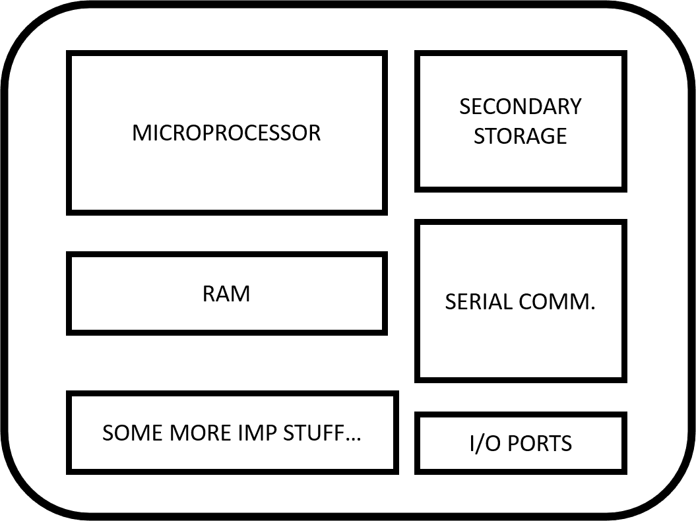
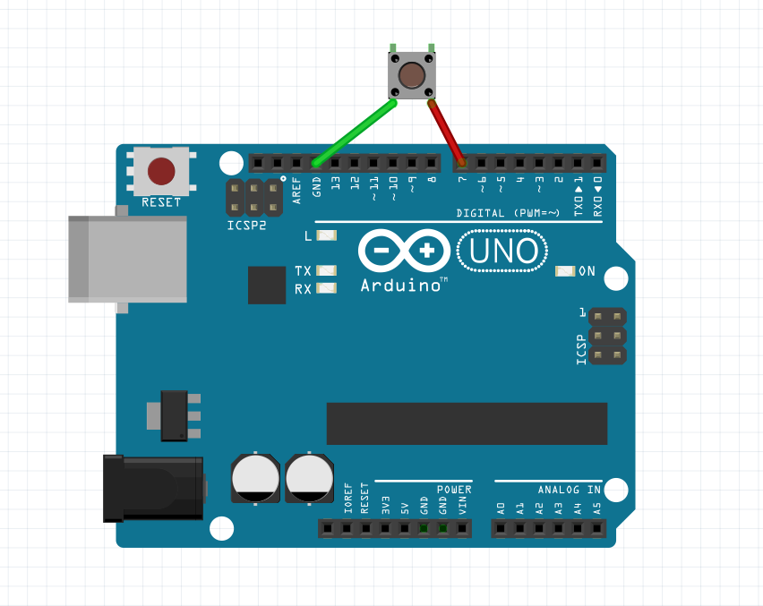

A microcontroller is a single-chip computer - a small computer with the bare minimum stuff to run programs on and create cool stuff.
You might have heard both the terms at least a bazillion times. Here's the difference: Basically, a microcontroller constitutes a microprocessor. It's like your desktop tower. There's a CPU who's the big kid on the street and runs the show. Then there are these small kids whose sole purpose of existence is to serve the requirements for the big fat kid. These include RAM, Secondary storage, I/O ports, among several other things. When put together, it makes a microcontroller. Here's a diagram to support the explanation:
Now, development boards (like the Arduino Uno, as featured in the last post) house in these microcontrollers and allow us to program and control them. (Uno has the ATmega 328p, but what's in the name anyway?)
Microcontrollers are used everywhere - from washing machines to satellites; from toy cars to cutting-edge autonomous cars. But to do that, they need more help, from devices like sensors, which leads us to:
Sensors are those thing-a-ma-jigs which allow a microcontroller to sense the real world. They convert a physical stimulus (like change in temp, height, acceleration) to digital (binary) signals, so the microcontroller can read them. There's a sensor available to measure almost every physical phenomenon.
Want to record the temperature for your fish tank project? Cool, there's the temperature sensor. Want to control the height of your autonomous drone? Look, there's the altitude sensor. You can measure the humidity, orientation, measure light intensity, acceleration, record images, make 3D scans of the real world (like what some self-driving cars do), and do any other thing imaginable with the right sensors!
Here we go, making an LED on an Arduino Uno blink. Again. But this time, we are going to do it with a push-button (a nice example for a sensor).
A push-button looks like this.
It is a simple switch like the one that turns your fans on and off, really. The only difference is since these devils are so small. Because they have elastic metallic contacts, they tend to generate noise on clicking.
This is called a switch bounce.
So come, young padawan, we are going to hack these little devils and read proper click on a push button.
Now, since these switches undergo an identity crisis when we click them. To go around this, we are going to 'delay' (the Arduino way to say: waiting for a specified period) and recheck, just to make sure if the button was really clicked.
Voila! We have successfully captured a button press. Now think about this: your TV remote, smartphone, laptop, gamepads - all have been doing all this, without fail, recording each of your keypresses precisely (they are not necessarily mechanical push-buttons, but you know what I mean!).
With this, let’s turn our heads to...
Cool. We have officially turned on and off LEDs with timers and buttons. But we want more! Now we are going to change the intensity of the LED. To change the power output, we can change the average power supplied to the LED in two ways:
However, LEDs have an optimal operating voltage (deviating too much from may break it). And what if we want to connect it to a Digital Pin(A pin that can only output at 2 levels: ON or OFF)? As eccentric as it may sound, we usually go about the second way to dim a LED. And this is called PWM (Pulse Width Modulation).
Here's an image showing PWM at different duty cycles (or simply put, the percentage of time the signal is high in a cycle)
Here's a crude way to turn it on and off for half a cycle of 20 milliseconds.
Hooray! But there's more. Luckily, this ugly piece of code has already been written in libraries. So here we go:
Now, that’s more like it!
We can now read misbehaving button clicks and change the brightness of LEDs. If you want to try, you can also mimic sinusoidal signals with PWM! There’s a lot more you can do, but I’ll leave you with room to think of more applications of what we’ve learnt today!
Kudos for making it all the way till here!
Until next time...
Subscribe below to receive emails about more such awesome articles